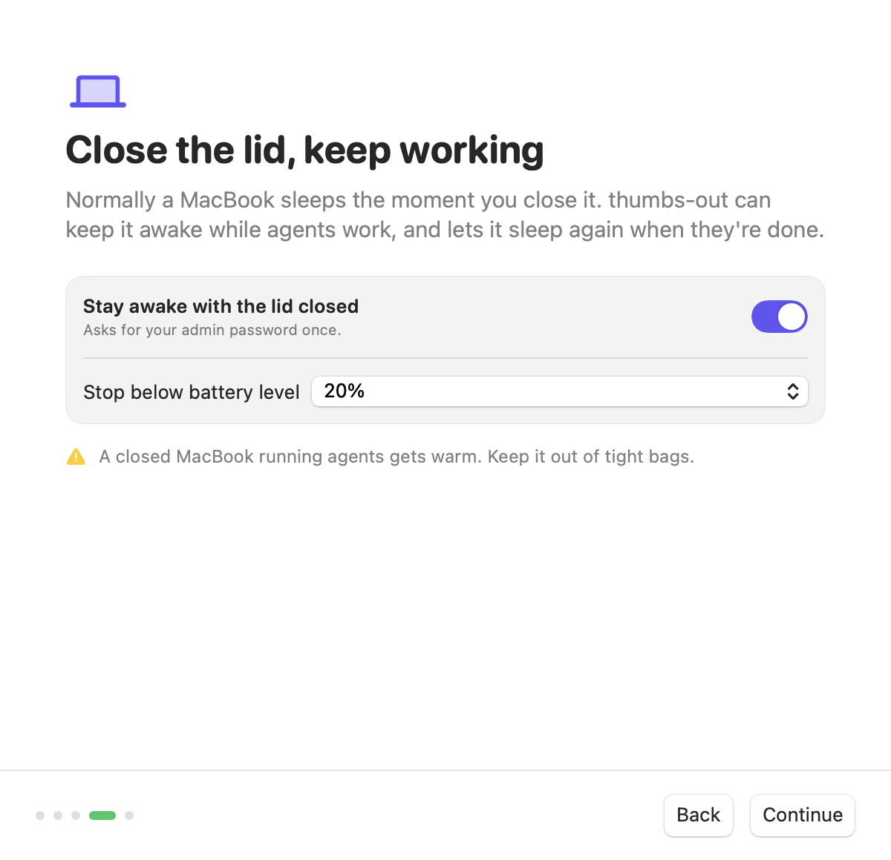
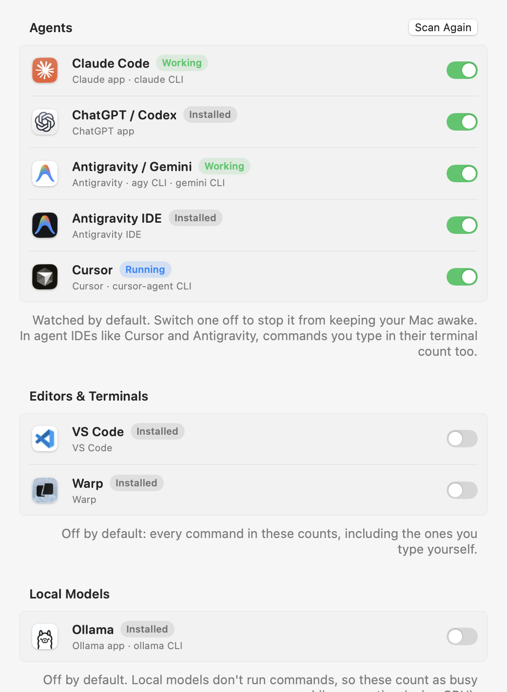
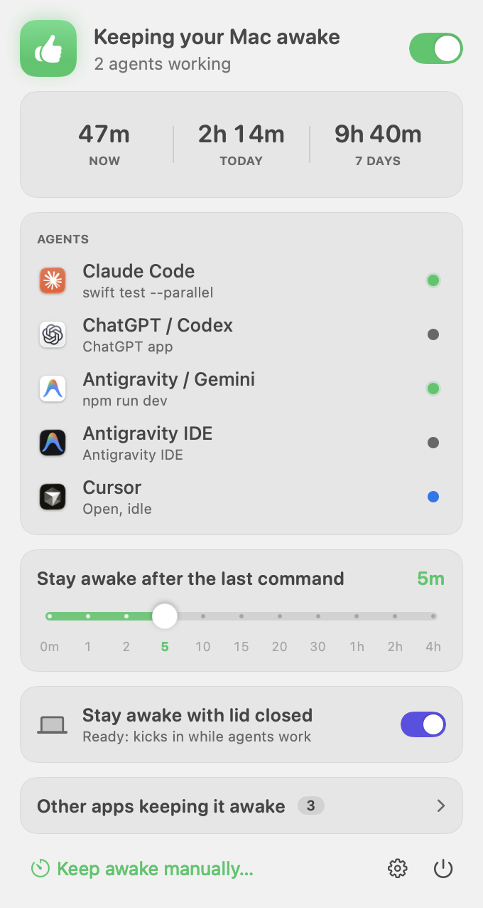
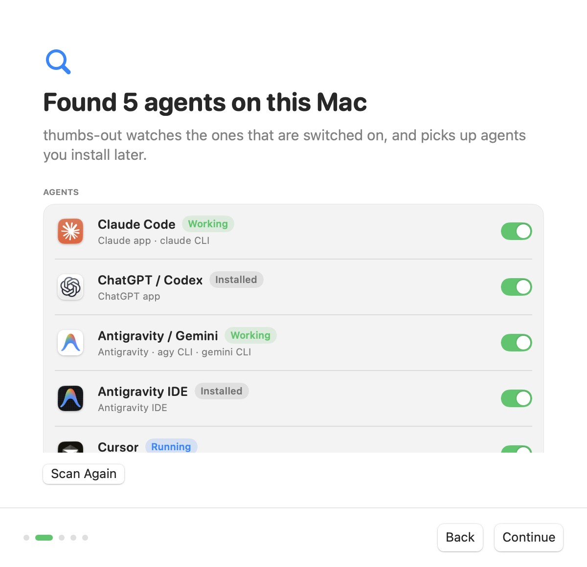

Free · open source · macOS menu bar app
Close the lid.
Your agents keep going.
thumbs-out notices when Claude Code, Codex, Cursor or Antigravity run commands and keeps your Mac awake until they're done. Like Amphetamine, but automatic.
brew install --cask mj0lken/tap/thumbs-out
Spotted in every café and co-working space
The half-open MacBook, carried like a tray.
Thumbs on the palm rest, lid at forty degrees, eyes on the progress bar. All because closing it would put the Mac to sleep and kill the agent mid-task. thumbs-out ends the balancing act.
How it works
-
01
It notices
Every few seconds thumbs-out checks the processes under each agent. When one starts a shell command, it knows work is happening. MCP servers and idle sessions don't count.
-
02
It holds on
It takes the same keep-awake lock as
caffeinateand Amphetamine, and keeps it through a grace period while the agent thinks between commands. -
03
It lets go
When the agents are done and the grace period runs out, your Mac sleeps like it normally would. No timers to remember.
Try it: the same snapping meter lives in the menu bar panel.
Watches the agents you use
It finds what's installed (apps and command-line tools) and shows each one's status. Agents you install later are picked up automatically.
- Working running a command, keeping the Mac awake
- Open, idle running, but not doing anything right now
- Installed found on your Mac, not running
Agents On by default
- Claude Code
- ChatGPT / Codex
- Antigravity
- Antigravity IDE
- Gemini CLI
- Cursor
- Windsurf
- Kiro
- GitHub Copilot CLI
- OpenCode
- Aider
- Goose
- Amp
- Factory Droid
- Qwen Code
- Crush
Editors & terminals Opt-in
- VS Code
- Zed
- Warp
Every command typed in them counts, including your own.
Local models Opt-in
- Ollama
- LM Studio
Counted as busy while generating, by CPU use.
Optional
Lid closed. Still working.
Normally a MacBook sleeps the moment you close it, no matter what's running. Turn on lid-closed mode and thumbs-out keeps it awake while agents work, then lets it sleep again.
- One admin password, once. It allows a single command:
pmset disablesleep. - Turns lid sleep back on when agents finish, the battery runs low, you quit, or it crashes.
- Never touches a setting it didn't change, and removes itself in one click.

Everything at a glance
See what each agent is doing, tune the grace period, and find out how long thumbs-out has kept your Mac going today and this week.



Put your thumbs away.
Homebrew
brew install --cask mj0lken/tap/thumbs-out
Download
Download the latest release- The app isn't notarized by Apple yet, so the first launch is blocked. Click Done.
- Open System Settings › Privacy & Security and click Open Anyway.
- The welcome window shows the agents it found and walks you through the rest.